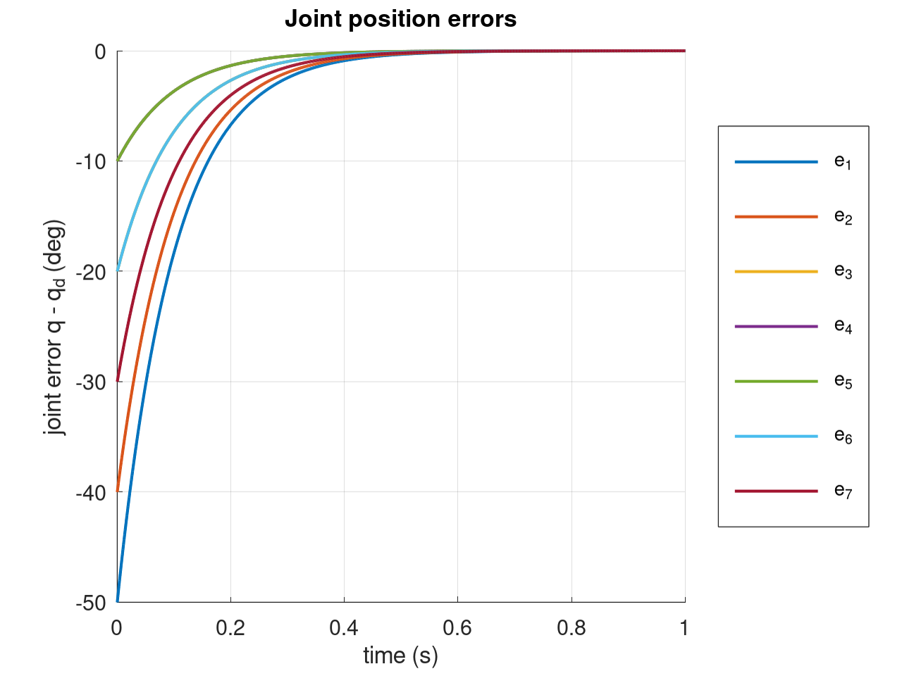
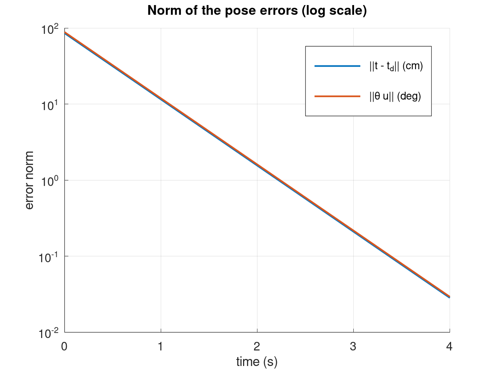
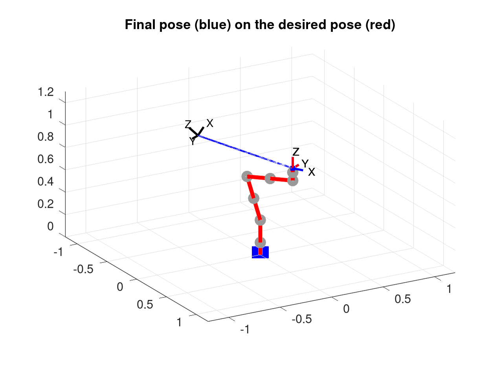

CourseworkSIMULATION
Pose control of a 7-DOF KUKA LWR4
Two kinematic controllers for a redundant arm: one that drives the joints to target angles, and one that drives the end-effector to a target position and orientation. Derived on paper, then simulated in Octave.
- Context
- Visual servoing lab (TP 2)
- Year
- 2026
- Work
- Individual
- Tools
- Octave · dual quaternions
01Joint position control
The robot is velocity controlled and simulated as an integrator, q ← q + q̇·Δt with Δt = 1 ms.
Imposing an exponential decrease of the joint error gives a proportional law that needs no kinematic model:
q̇ = −λ (q − q_d), with λ = 10 s⁻¹: every joint converges with the same time constant τ = 0.1 s.
02End-effector pose control
FKMcurrent pose as a unit dual quaternion
→
pose errorposition
t − t_d + orientation θu→
desired twist
v = −λ_t e_t, ω = −λ_r θu→
J⁺(q)pseudo-inverse of the 6×7 Jacobian → q̇
- The orientation error comes from the quaternion of
x · x_d⁻¹, with its sign chosen for the shortest rotation andθ = 2·atan2(‖q_v‖, q_w)for accuracy at small angles. - Because
θuis an eigenvector of its own interaction matrix,ω = −λ_r θugives an exact exponential decrease without inverting it. - The arm has 7 joints for a 6-D task, so it is redundant: the Moore–Penrose pseudo-inverse picks the minimum-norm joint velocity.
03Results
| time | position error | orientation error |
|---|---|---|
| t = 0 | 85.49 cm | 88.16° |
| t = 4 s | 2.8 × 10⁻² cm | 2.9 × 10⁻² deg |


04Limits I found
- Velocity peaks: the joint law asks 500°/s at t = 0, above a real KUKA's limits. A real robot needs a lower gain, saturation, or a smooth reference trajectory.
- Near-singular start: in pose control, q̇₄ peaks at about 1100°/s because the elbow starts close to the stretched-arm singularity (smallest singular value 0.053). A damped least-squares inverse would handle this.
- Link to visual servoing: the same pose controller becomes PBVS when the pose is estimated by a camera instead of the encoders.